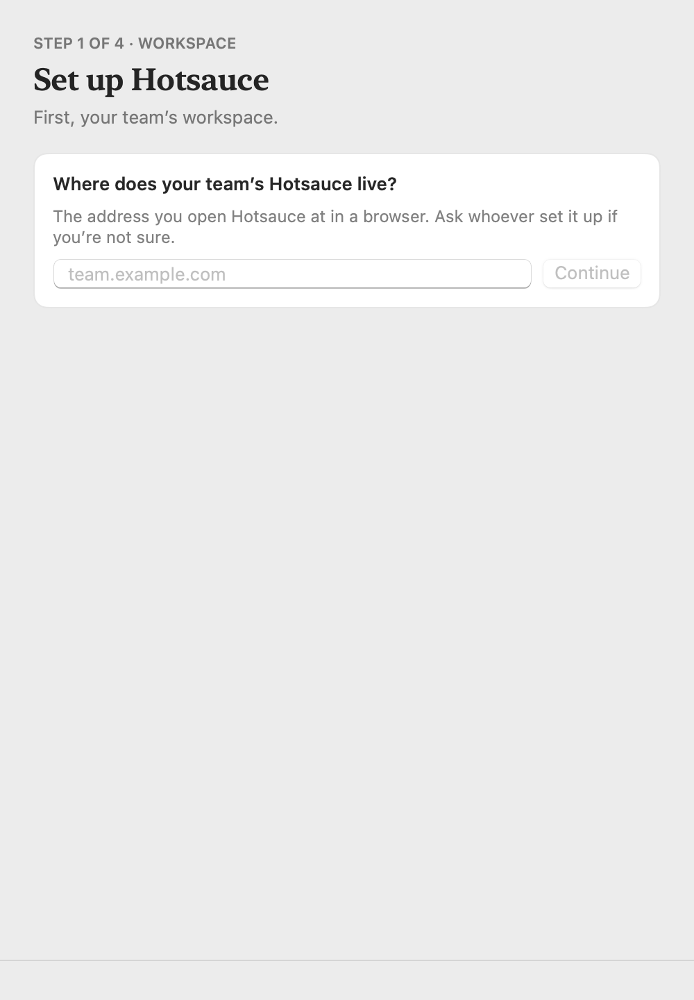
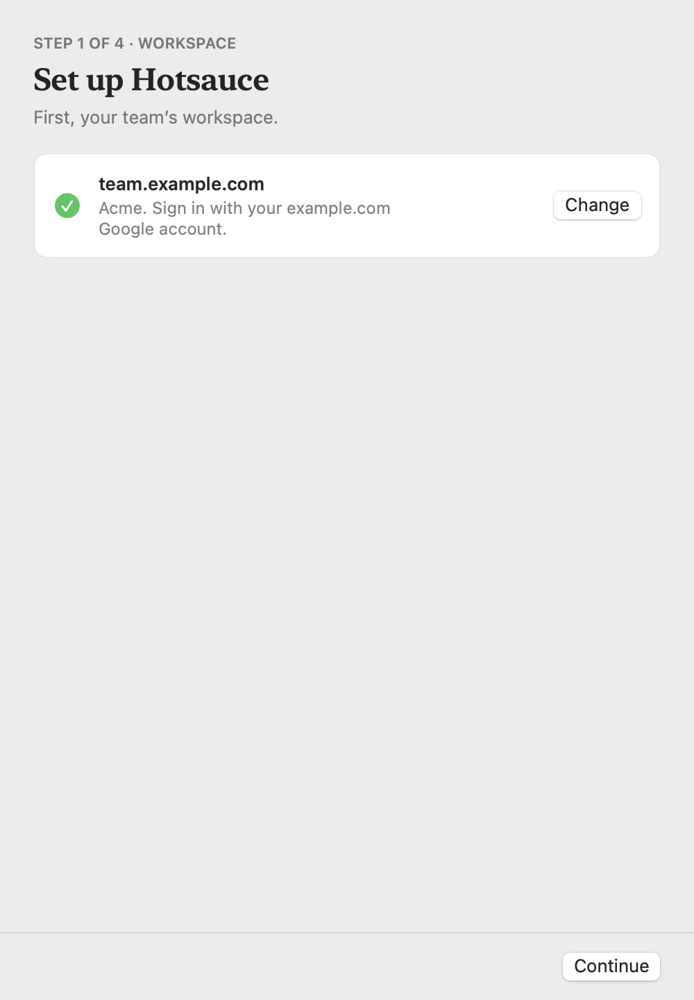
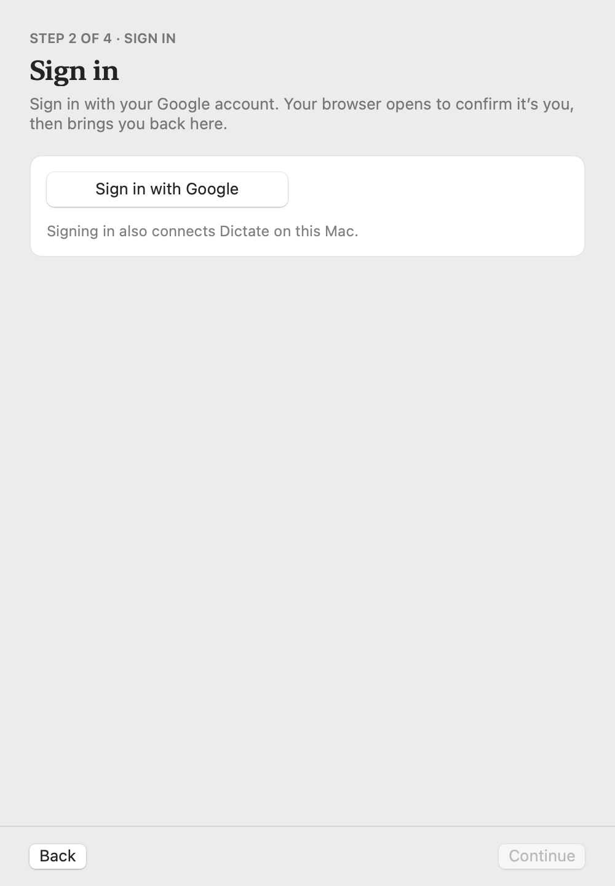
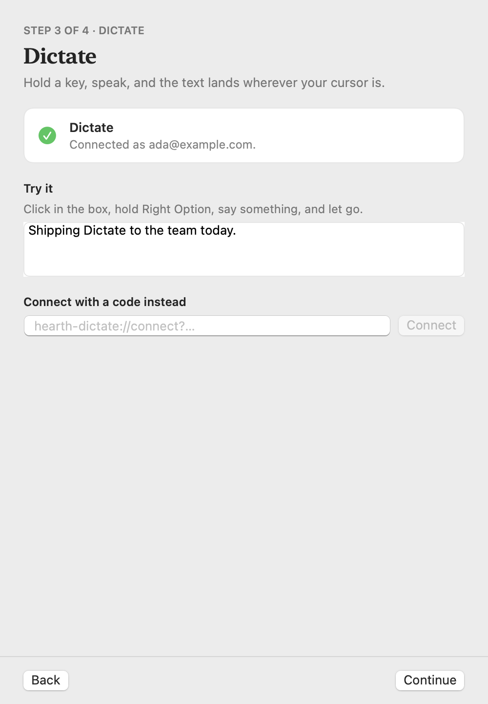
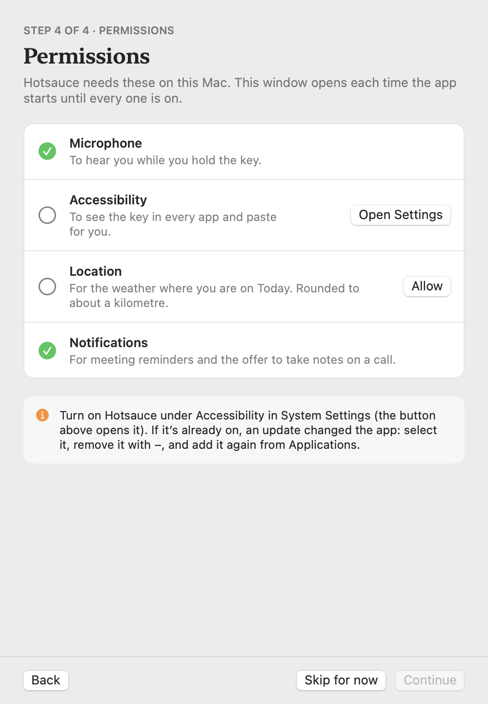
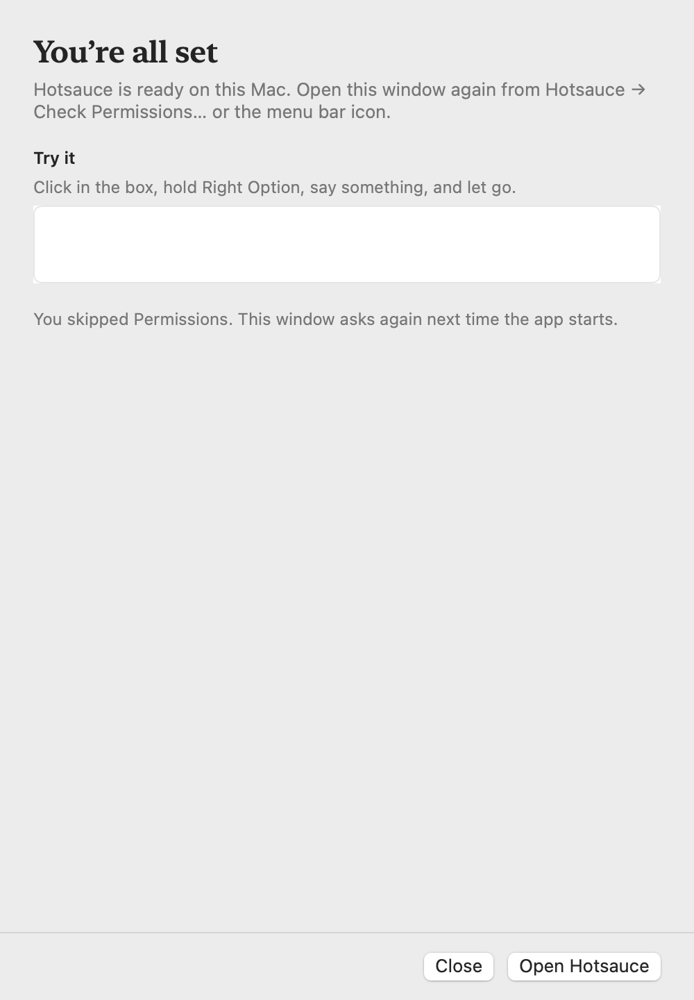

Hotsauce
File
Window
Tue Nov 17 8:31 AM






Set up the
Mac app
1
Your workspace
Type the address once
2
Sign in with Google
Also connects Dictate
3
Try Dictate
Hold a key and talk
4
Permissions
Each one explained